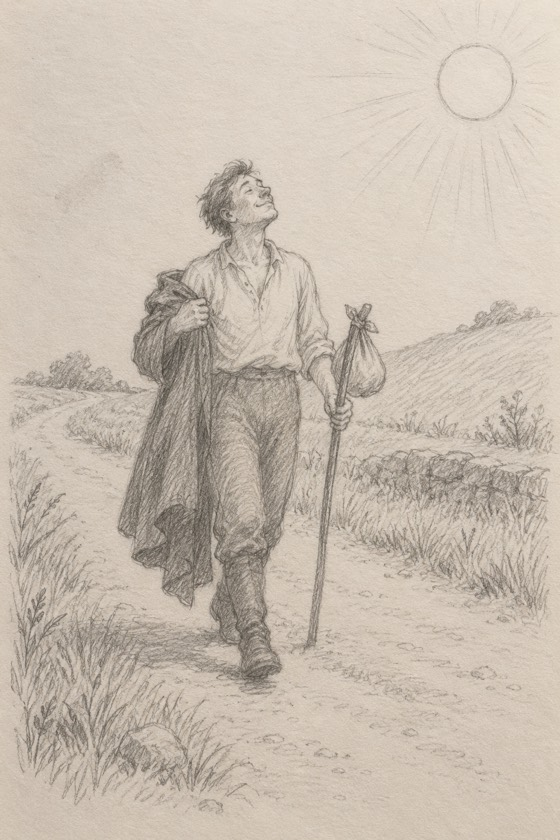

|
Has someone you love ever gone quiet on you?
You ask what’s wrong. He says, “Nothing.” You ask again. You send the long text. You say, “We need to talk.”
Most of us push. It’s only natural.
There’s an old fable about this. It’s one of Aesop’s, from ancient Greece.
The North Wind and the Sun were arguing about which of them was stronger.
Then they saw a man walking down the road in his coat. So they agreed: whoever could get that coat off him would win.
The North Wind went first. It blew as hard as it could.
But the harder it blew, the tighter the man held on to his coat.
In the end, the wind gave up.
Then it was the Sun’s turn. It came out gently at first. Then warmer. Then warmer still.
And the man took his coat off himself.
In one old telling, he got so warm he went for a dip in a stream. The wind couldn’t even get his coat off.
Moral of the story: you can’t force anyone to open up.

Nearly 2,000 years ago, a Greek writer named Plutarch put this fable in his advice to a bride and groom. So it’s been marriage advice for a very long time.
I think it’s love advice too.
When someone pulls away, we get scared. So we blow harder. One more question. One more text. One more talk.
And he holds on tighter.
You’ve been told to fight for him. The fable says the wind fought with everything it had. It lost.
You’ve been told it’s up to you to get him to open up. The fable says nobody got that man to do anything. The sun made it warm, and he did the rest himself.
That second one matters most. When love is right, it opens up on its own, in the warm. And if you have to pry it open every single time, that tells you something too.
This letter isn’t for everyone.
If he talks to you easily, you can skip the rest. I’m glad for you.
But if you’re always the one who reaches first…
If you can feel him pulling away, and you can’t say why…
Or if there’s no one right now, because your own guard has been up a long time…
Then come and tell me about it. Who you can’t quite reach, and what happens when you try to get close. Or how long that guard has been up.
Evelyn, I’m ready to see what’s really going on in my love life →
We’ll look at:
➤ why he’s been holding back, or why no one’s got close yet
➤ what’s been helping, and what hasn’t
➤ who’s really worth your warmth
And no pushing from me.
First time talking to me? Your first 3 minutes cost nothing.
The wind kept blowing until it had to give up. Don’t wait until you’re that tired.
Tell Evelyn who I can’t reach →
— Evelyn
P.S. The wind wanted that coat and never got it. The sun never asked for it, and got it anyway. If you’re tired of pushing, come and tell me about him. Start here.
|